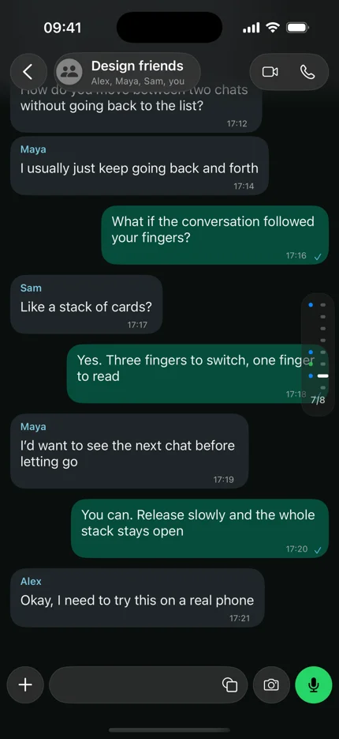
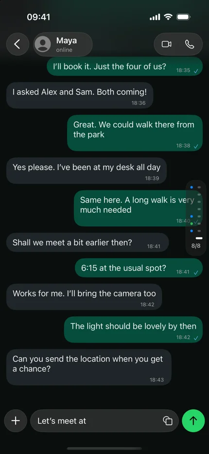

A Small Weird Things experiment
Three fingers.
A different
conversation.
What if your recent chats were a stack you could hold?


A Small Weird Things experiment
What if your recent chats were a stack you could hold?

